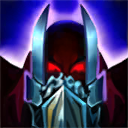
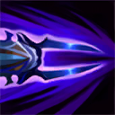
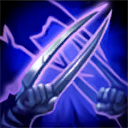

核心裝備
 星蝕
星蝕 巨蛇鋒牙
巨蛇鋒牙 席利妲咒怨
席利妲咒怨 精進之矛
精進之矛 守護天使
守護天使

以下為本站 7.2d 校正後的標準配置；實戰仍需依敵方陣容調整。


技能優先：Q > E > W

對低生命目標普攻時造成額外魔法傷害；同一目標在短時間內只會觸發一次，是補刀、換血與完成斬殺的重要傷害來源。
劫與影分身朝指定方向投擲手裡劍並造成物理傷害。多枚手裡劍同時命中同一目標，是主要爆發來源。
向前放出影分身，影分身會同步施放一技與三技；重施可與影分身交換位置。劫與影子用相同技能命中同一目標時可回復能量。

劫與影分身斬擊周圍敵人。劫本體命中英雄可縮短二技冷卻，影分身命中則會造成緩速，方便後續手裡劍命中。

短暫不可被選取並突進到目標身後，留下可交換位置的影分身並附加印記；印記會依期間內造成的傷害延遲爆炸。
2技放影 → 3技同步斬擊 → 1技雙手裡劍 → 拉回安全距離
影子三技先緩速可提高雙手裡劍命中率；未命中兩段一技時不要換位硬追。
2技放影 → 3技緩速 → 1技輸出 → 2技換位 → 被動普攻
遠距技能命中後再換位近身，利用低血量被動普攻收尾；敵方控制未交時保留影子作退路。
4技標記 → 2技佈置退路 → 3技斬擊 → 1技多影命中 → 普攻 → 換回大絕影子
大絕落地後立刻放影分散角度，盡量讓多枚手裡劍命中；傷害足夠就提早換回，不必留在原地等印記爆炸。
以一技補兵與消耗，二技影分身未轉好前保持安全距離。能量不足時不要勉強打一整套，先等技能同步再找雙手裡劍角度。
推完線後從視野外接近邊線，優先攻擊沒有護甲與保命技能的目標。大絕進場前先放好可撤退的影子，避免擊殺後無法離場。
正面團戰先用影子消耗，不急著第一時間大絕。等金身、護盾與硬控交出後再鎖定後排，完成標記傷害後立即換影撤退。
對局名單是本站依英雄機制與目前配置整理的參考，不等同固定勝率。
中路優先處理爆發、控制與抗性問題；標準輸出核心不因單一威脅整套推翻。
觸發：對線或團戰有能直接貼近你的刺客／爆發核心，常在完成第一輪輸出前死亡。
魔提斯深淵提供魔防與低血量魔法護盾，比單純增加輸出更能保住進場或持續輸出。
骨甲直接降低同一名敵人接續幾次技能或普攻的傷害。
觸發：敵方有多個關鍵硬控，會讓你無法安全站位或施放完整連段。
先購買水銀飾帶取得主動解控，之後再合成水星彎刀；水銀飾帶是合成組件，不是另一件要與水星彎刀互換的成裝。
犧牲部分輸出型傳奇符文，換取韌性與緩速抗性。
觸發：敵方前排多，團戰需要你持續處理高生命目標，而不是只秒後排。
標準配置已經有持續傷害／穿透或高生命處理能力。
觸發：敵方治療、吸血或回復讓你的消耗與爆發很難真正壓低血線。
致死宣告兼顧暴擊、穿透與重創，適合射手在不拆核心輸出邏輯下補反治療。
觸發：敵方核心已經針對你的主要傷害類型堆高物防或魔防。
你不是隊伍主要穿透來源，或標準配置已經有足夠百分比穿透／削抗。
提醒：「坦克多」看的是高生命前排；「抗性高」則是對方已經明確堆高物防／魔防，兩種情境不一定相同。
7.2a 中路第三批正式版：技能名稱與核心機制沿用 Riot Games 台灣《激鬥峽谷》已校正資料；版本基準採官方 7.2 與 7.2a 更新公告，出裝、符文與對局方向參考 7.2a 當前中路環境後整合。Tier 維持本站既有 46 位中路正式名單評級。｜v61：完整套用阿璃中路固定母版。
本站於 2026-08-27 依 Patch 7.2d 重新檢查此配置。 Tier、出裝、符文與對局屬於 Wild Rift Guide 的整理與分析，不是 Riot Games 官方推薦；版本改動後會再依官方公告與實戰資料校正。